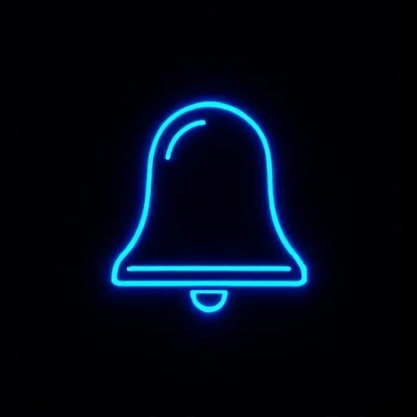

WPA3 (Wi-Fi Protected Access 3, finalized 2018) addresses fundamental weaknesses in WPA2, particularly around password-based attacks and forward secrecy. It comes in two modes:
| Attribute | WPA2-Personal | WPA3-Personal (SAE) |
|---|---|---|
| Key Exchange | 4-way handshake (PSK derivation) | SAE Dragonfly (ECDH-based, no PSK over air) |
| Offline Attack | Capture EAPOL handshake, run hashcat offline | Not possible -- no handshake material to capture |
| Forward Secrecy | No -- compromise PSK decrypts all sessions | Yes -- per-session ephemeral keys |
| Deauth Vulnerability | Deauth frames unauthenticated; easy to force re-auth | 802.11w required -- deauth frames authenticated |
802.11w (Management Frame Protection, MFP) authenticates management frames -- specifically deauthentication, disassociation, and action frames. In WPA2 networks, an attacker can send a forged deauth frame to any client, forcing it to disconnect. This is trivially easy with tools like aireplay-ng. With 802.11w enabled, management frames are signed with the session's PTK, making spoofed deauths cryptographically invalid.
! Create security policy for WPA3-Enterprise + 802.11w wlan Corp-WiFi 1 Corp-WiFi security dot1x security wpa wpa3 security wpa akm dot1x security wpa pairwise cipher-suite gcmp256 security pmf mandatory ! 802.11w -- require MFP no security wpa wpa2 ! Disable WPA2 fallback on this SSID dot1x system-auth-control no shutdown ! Create a WPA3/WPA2 transition SSID (backward compat) wlan Corp-WiFi-Transition 2 Corp-WiFi-Transition security wpa wpa3 security wpa wpa2 security wpa akm psk security wpa psk ascii Str0ngPassphrase! security pmf optional ! 802.11w optional for WPA2 clients no shutdown
Wireless Intrusion Detection Systems (WIDS) monitor 802.11 frames for attack patterns. Wireless Intrusion Prevention Systems (WIPS) add the ability to contain detected threats by sending deauthentication frames or blocking the rogue AP's wired uplink.
| Threat Category | Detection Method | WIPS Response |
|---|---|---|
| Rogue AP | AP seen on air that is NOT in authorized AP list; if SSID matches corporate SSID = evil twin | Send deauth to rogue AP clients; locate wired port via MAC, shut it down |
| Deauth Flood | Abnormal deauth frame rate from a non-AP MAC; volume threshold exceeded | Alert + block source MAC; upgrade clients to 802.11w |
| Probe Response Flood | AP responding to all probe requests regardless of SSID (Karma attack) | Alert; block if SSID matches corporate |
| WEP/WPA2-TKIP | AP advertising deprecated encryption detected on RF | Alert; block corporate clients from associating |
| Ad-hoc (IBSS) | BSS Type = IBSS in beacon frames | Deauth all clients from ad-hoc network |
| Unauthorized Client | Client MAC not in MDM/ISE whitelist associates to corporate SSID | Alert + deauth; require 802.1X certificate |
An evil twin AP broadcasts the same SSID as the legitimate corporate wireless network. If clients connect (because the evil twin has stronger signal or the legitimate AP is unavailable), the attacker performs a man-in-the-middle attack, capturing credentials and session traffic.
# Evil Twin Attack 1. Attacker sets up AP with SSID="Corp-WiFi" near target building 2. Broadcasts at higher power than legitimate APs on same channel 3. Target clients see two "Corp-WiFi" networks, connect to strongest signal 4. DHCP served by attacker; DNS controlled by attacker 5. Attacker proxies traffic -- captures credentials, session cookies # Defense: - WPA3-Enterprise (EAP-TLS): client validates server certificate "Corp-WiFi" must present cert signed by corporate CA Evil twin cannot present valid cert -- client rejects connection - WIPS: detect AP with matching SSID but different BSSID/channel/location - 802.11w: prevents deauth forcing clients off legitimate AP # Karma Attack (Responds to any probe) 1. Client probes: "Is Corp-WiFi present?" "Is Starbucks present?" 2. Karma AP responds YES to all probe requests 3. Client connects (trusts the SSID it remembers) 4. Mitigation: 802.1X -- client must validate server certificate Without valid cert, WPA-Enterprise connection fails A PSK network has no server cert to validate -- inherently vulnerable

With WPA2/WPA3-Personal (PSK), there is no mechanism for the client to verify the AP is legitimate. If the attacker knows the PSK (which any employee or past employee does), they can run a fully authenticating evil twin. WPA3-Enterprise with EAP-TLS and server certificate validation is the only reliable defense. All sensitive corporate networks should use 802.1X -- no PSK.
# Corporate SSID Security: WPA3-Enterprise (or WPA2-Enterprise minimum) Auth: EAP-TLS (client + server certificate) Cipher: AES-256-GCMP (WPA3) or AES-CCMP-128 (WPA2) MFP: 802.11w Mandatory PMKID: Disable (prevents offline attack on WPA2 PMKID captures) Fast Roaming: 802.11r + 802.11k (secure fast BSS transition) # Guest SSID Security: WPA3 Enhanced Open (OWE) or WPA2-PSK with rotation VLAN: Dedicated guest VLAN, no internal access Captive: Web auth portal for terms acceptance + logging Client Iso: Enable AP client isolation (guests can't reach each other) Bandwidth: Rate limit per client (prevent abuse) # IoT SSID Security: WPA2-PSK (IoT devices rarely support 802.1X) VLAN: Dedicated IoT VLAN with strict ACL DNS: Force to internal resolver with RPZ Internet: Allow only specific cloud service IPs (vendor whitelist) # General SSID Hiding: Do NOT use (clients probe for hidden SSIDs, worse security) Default PWD: Change all AP management credentials from factory default SNMP: Use SNMPv3 with auth+priv; disable v1/v2c Mgmt Access: Restrict AP CLI/GUI to management VLAN only WIPS: Enable; classify rogue threshold; auto-contain evil twins